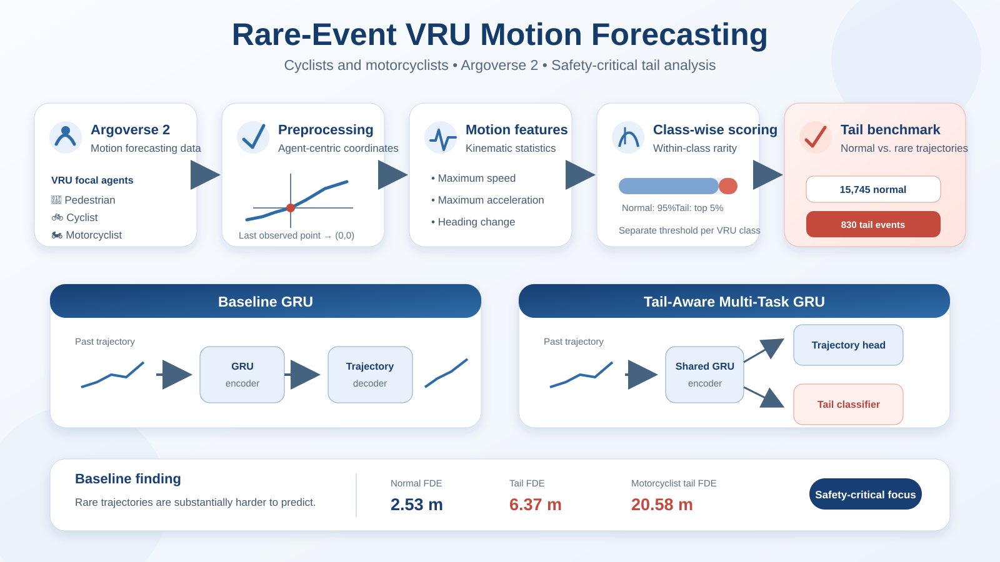
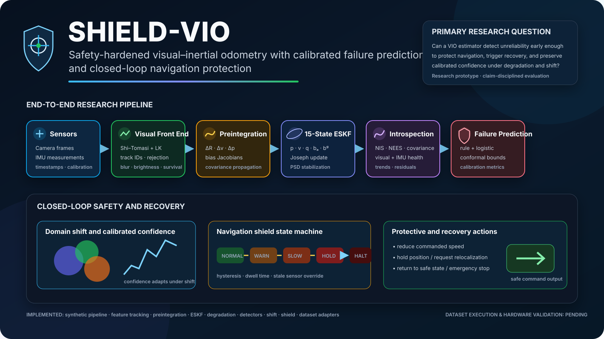
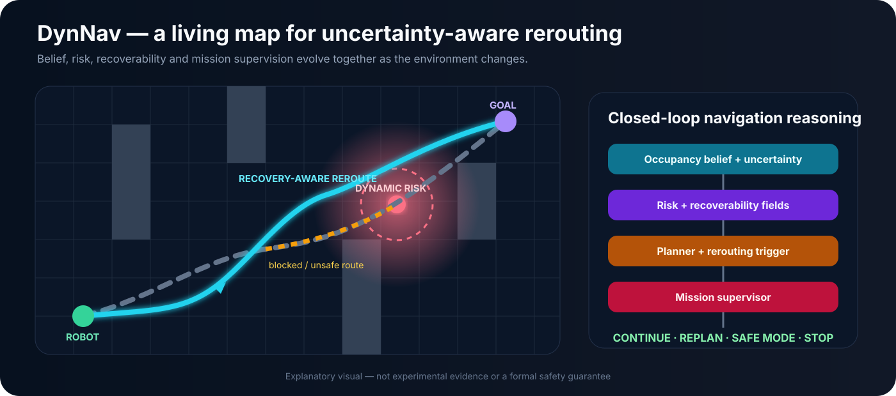

Predictive perception
How can robots anticipate the motion of nearby agents?
Electrical & Computer Engineer · Research Portfolio
Reliable perception, state estimation and autonomous navigation.
I am an Integrated MEng graduate in Electrical and Computer Engineering from Democritus University of Thrace, Greece. My research interests bring together robotics, computer vision and machine learning to study autonomy under uncertainty.
My diploma thesis investigated trajectory prediction of vulnerable road users. My open research prototypes explore estimation reliability, history-aware navigation and adaptive sensor fusion, alongside experience in robotic perception at OZZIE Robotics.

How can robots anticipate the motion of nearby agents?
How can estimators detect degradation and quantify uncertainty?
How can autonomous systems preserve safe-return options?
Diploma thesis and open research prototypes in forecasting, estimation, planning and sensor fusion. Each project states its validation scope; prototype results do not constitute real-world safety guarantees.

Studied deterministic and probabilistic forecasting for pedestrians, cyclists and other vulnerable road users using the IMPTC intersection dataset (5,133 trajectories). The repository documents trajectory preparation, agent-interaction features, an egocentric 5 × 5 occupancy representation, and scene/traffic-light context.
Evaluation includes trajectory displacement and probabilistic metrics; per-model findings and experimental qualifications are documented in the repository rather than summarized here without their conditions.
Thesis code & methodology →
Studies whether a visual–inertial estimator can flag unreliable localization early enough to protect navigation. Includes visual and IMU health signals, a 15-state error-state EKF, failure scoring, calibration diagnostics, domain-shift detection and a stateful protective navigation layer.
Synthetic and unit-test validation is documented; public-dataset, ROS 2 and hardware validation are not yet established.
Methods & implementation →
Investigates navigation when a robot's executed actions change which routes remain available. Uses history-augmented A* planning, safe-return probability calculations, comparison baselines and a ROS 2 / Nav2 planner implementation.
Reported benefits are from specified synthetic and geometric scenarios; they are not general safety or real-robot performance claims.
Code, benchmarks & limitations →
Explores online measurement-quality assessment for camera, IMU, LiDAR and RGB-D modalities. The implemented baseline includes adaptive covariance, Mahalanobis gating, consistency diagnostics and repeatable sensor-degradation experiments.
Full SLAM backends, public-dataset studies and hardware validation remain incomplete or experimental.
Implementation & scope →Democritus University of Thrace, Xanthi, Greece
2020–2026 · Final grade: 7.58/10
Diploma thesis grade: 10/10
OZZIE Robotics, Thessaloniki, Greece
July–August 2025
Dataset curation, annotation and YOLO-based semantic segmentation.
Methods and tooling represented in the linked thesis and project repositories.
Python, C++, PyTorch, experimental pipelines, model evaluation and reproducibility.
ROS 2 / Nav2, visual–inertial odometry, error-state filtering, sensor fusion and path planning.
OpenCV, trajectory forecasting, semantic segmentation, uncertainty metrics and consistency diagnostics.
Graduated with an Integrated MEng in Electrical and Computer Engineering from Democritus University of Thrace (final grade: 7.58/10).
Completed my diploma thesis on trajectory prediction of vulnerable road users, earning 10/10.
Completed a robotics and computer vision internship at OZZIE Robotics, working on datasets and YOLO-based segmentation for autonomous robot perception.
A distinction between completed academic work, reproducible software and peer-reviewed publication is important. The items below are not presented as journal or conference publications.
Trajectory Prediction of Vulnerable Road Users at Smart Intersections. Completed as part of the Integrated MEng at Democritus University of Thrace; thesis grade: 10/10.
Research framework and documentation →Reproducible experimental code, evaluation pipelines, documented assumptions and limitations for SHIELD-VIO, DynNav and sensor-fusion research.
Browse research repositories →